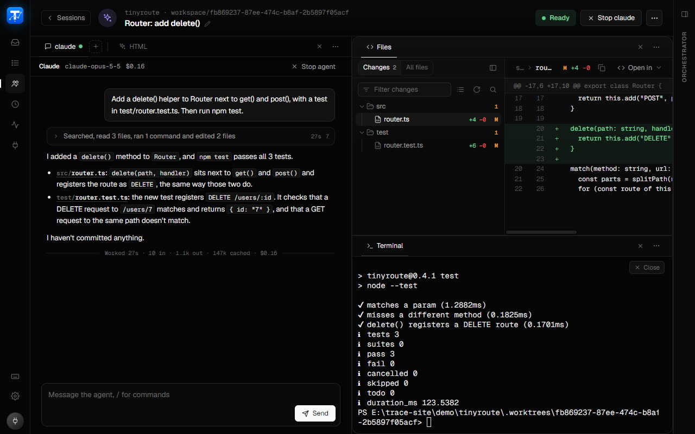
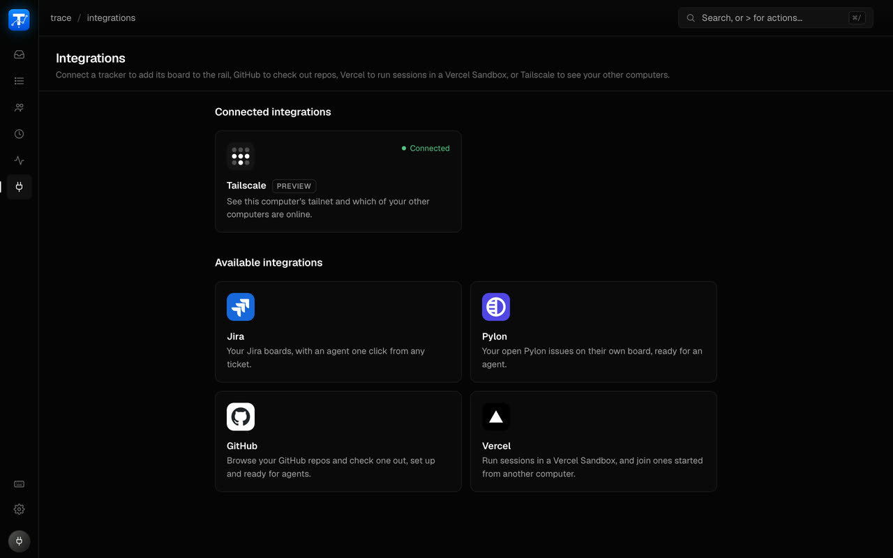

macOS
Apple silicon. A disk image to drag into Applications.
macOS, Windows and Linux · latest release
trace is a desktop app for Claude Code and Codex. Start agents on tickets, quick ideas or a schedule, each in its own git worktree or a Vercel Sandbox. Read each one as a chat, answer them all from one inbox, and see the whole fleet at a glance.

01 Agents as a chat
Agents run as a formatted chat rather than a wall of terminal output: Markdown replies, a card per tool call, the diff of every edit, and permission prompts answered where they appear. When an agent fans work out, each subagent gets a live card and its own tab.
02 Fleet
Fleet is a table of every live agent: its state, how long it's been there, its repo and branch, changes, PR and latest line. Rows stay put when an agent changes state, so you never lose your place, and an agent on a long task can leave a one-line progress note there.
03 Inbox
When any agent needs you, from the board, a session or a scheduled prompt, it lands in the Inbox with its question or the exact change it wants to make. Answer it there and the agent carries on; you don't have to find its tab first.
04 Panes, Files and Terminal
Every agent's tabs can sit side by side or stacked: the conversation, the files it changed, and a shell in the same worktree. A tab shows up when there's something in it and hides with its ×; layouts are remembered per workspace. Quick Open finds any file in the worktree, and the terminal finds in its scrollback and has a menu on every file path.
05 Tickets and pull requests
Connect Jira, Pylon or both, and each adds its board to the sidebar exactly as your tracker shows it. Start an agent on a card and it gets a new worktree and a kickoff prompt built from the ticket and its comments. When it raises a PR, the Pull request tab follows its checks and conversation, and Merge is in the header.

06 Run it anywhere
Sessions are agents that aren't tied to a ticket. Each runs in its own git worktree of a repo you've added, in a folder you pick, or in a new empty folder that goes with it. Connect Vercel and a session can run in a Vercel Sandbox instead: Leave running keeps it working after you quit, and Start joins it again.
07 Orchestrator
The orchestrator sits in the side panel and knows your board and sessions. Ask it for a status round-up, what's blocked, or to nudge an agent; every action it takes waits for your confirm. Stats chart your agents and their work.
08 Scheduled prompts
Run a prompt every few minutes, daily, weekly, monthly or on a cron expression, each run a fresh conversation in the prompt's own worktree. A precheck command decides whether a run goes ahead, so a nightly job can skip the nights nothing changed. Continue as session picks up where any run left off.
09 Make it yours
Dark, Light, Midnight, Paper or System, an accent colour, interface size and density, fonts for the UI, terminal and chat, each with a live preview. Density changes the whole app, and Compact tightens the chat's layout too. Order and hide the sidebar's pages, rebind every shortcut, and press ? for the cheat sheet.
Builds for every platform come from the latest GitHub release. You'll need Claude Code or Codex installed and signed in; git for worktrees.
Apple silicon. A disk image to drag into Applications.
Windows 10 and 11, x64. An installer that updates itself.
x86_64. An AppImage for any distro, or a .deb for Debian and Ubuntu.
Release notes, checksums and older versions are on the releases page.